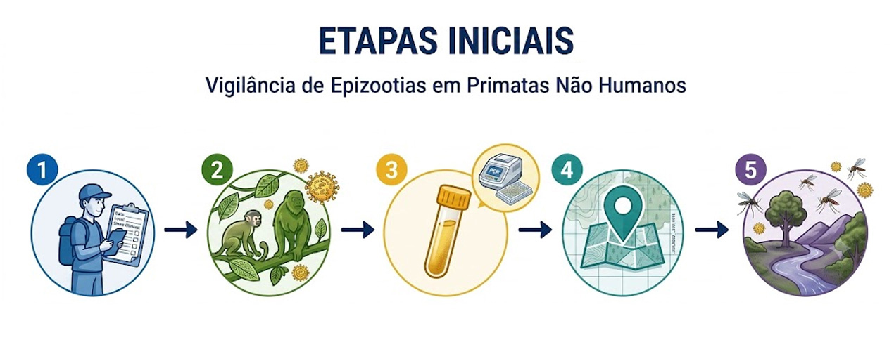
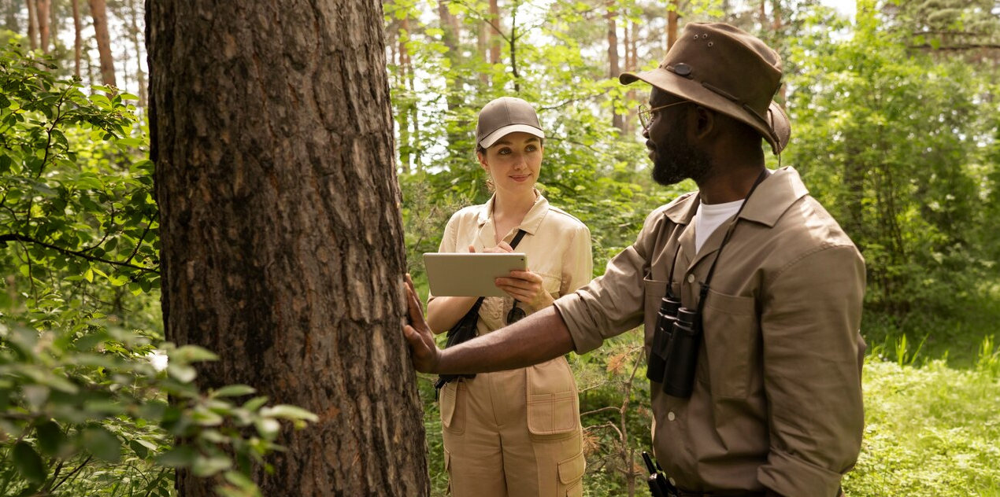
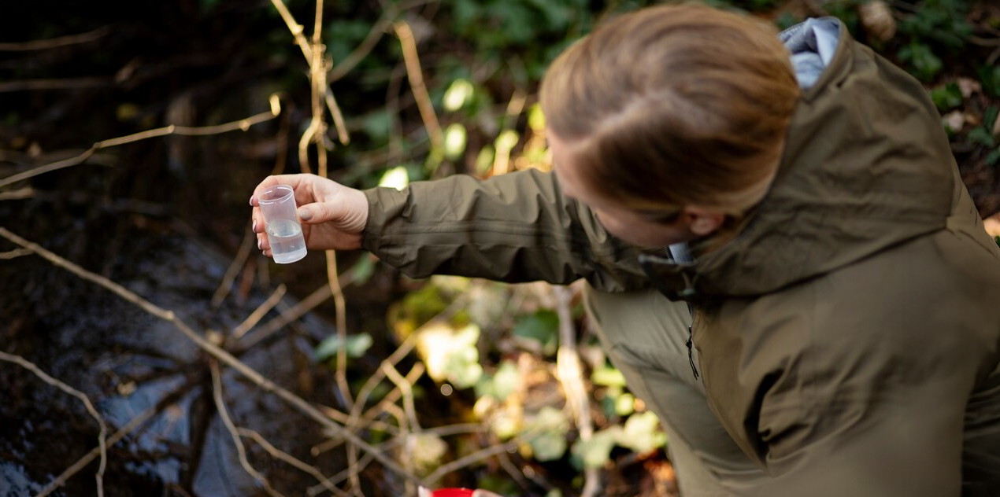
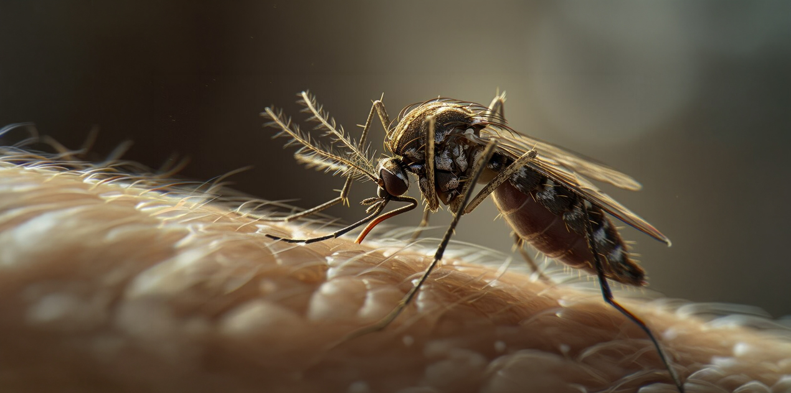
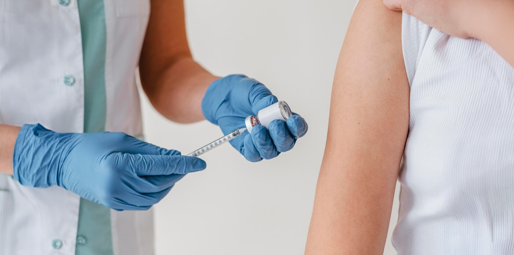

Nesta aula, falaremos sobre a febre amarela silvestre, um evento emblemático da Vigilância em Saúde, sob a perspectiva da Saúde Única, evidenciando a necessidade de uma atuação cooperativa e intersetorial, com destaque para o papel dos primatas não humanos, especialmente os bugios, como sentinelas ambientais, e para a articulação entre saúde, meio ambiente e estratégias de comunicação de risco.
Objetivos de
aprendizagem
Ao final desta aula, esperamos que você seja capaz de:
Reconhecer as epizootias como eventos sentinela na Vigilância em Saúde.
Compreender a relação entre biodiversidade, território e circulação da febre amarela.
Identificar os fluxos de vigilância e resposta diante da ocorrência de epizootias.
Reconhecer a importância da integração entre saúde humana, animal e ambiental.
Aplicar os princípios da Saúde Única na análise de situações reais do território.
Introdução
Na aula anterior, discutimos Saúde Única como um paradigma que amplia a compreensão da Vigilância em Saúde, ao reconhecer a interdependência entre saúde humana, animal e ambiental. Você também viu que a Vigilância Cooperativa constitui a expressão prática dessa abordagem, organizando a atuação de forma compartilhada, territorializada e intersetorial.
Agora, vamos dar mais um passo no seu aprendizado, se você entendeu o paradigma e sua tradução operacional, a questão é:
Como o compartilhamento de responsabilidades e a atuação cooperativa se materializam diante de um evento real no território?
A Vigilância Cooperativa é continuamente desafiada por situações que, à primeira vista, podem parecer eventos isolados, como por exemplo:
Óbito de um animal silvestre.
Aumento de casos febris.
Surto em ambiente escolar.
Alteração na qualidade da água.
Entretanto, a experiência acumulada nos serviços de saúde demonstra que esses acontecimentos raramente são casos pontuais. Com frequência, configuram sinais precoces de processos territoriais mais amplos, que envolvem transformações ambientais, dinâmicas produtivas, circulação de agentes infecciosos, condições de moradia e organização social. Sob essa perspectiva, o evento deixa de ser apenas um fato a ser notificado e passa a ser compreendido como indicador de um contexto em movimento. É nesse ponto que a Vigilância Cooperativa se torna decisiva: não apenas para responder ao agravo já instalado, mas para interpretar os processos que o produziram.
Nesta aula, você avançará da dimensão conceitual para a análise aplicada ao território. Para isso, você vai precisar:
Analisar um estudo de caso sob a perspectiva de Saúde Única.
Identificar eventos sentinela e seus significados no contexto territorial.
Reconhecer os fluxos intersetoriais necessários para uma atuação cooperativa.
Compreender como a articulação entre setores qualifica a tomada de decisão.
Exercitar uma leitura ampliada e antecipatória do risco.
Evento sentinela e vigilância antecipatória
A epidemiologia tradicional estrutura-se na identificação de casos humanos. No entanto, a abordagem Saúde Única amplia essa lógica ao reconhecer que eventos em animais e no ambiente podem preceder o agravo humano.
O conceito de evento sentinela foi sistematizado por Rutstein et al. (1976) como ocorrência cuja presença indica risco ampliado ou falha sistêmica, sendo posteriormente incorporado à Vigilância Epidemiológica como instrumento de alerta precoce. Na perspectiva contemporânea da Saúde Única, eventos sentinela incluem ocorrências biológicas, ambientais ou sanitárias que funcionam como sinais precoces de ameaça à saúde coletiva, mesmo antes da consolidação de casos humanos. Essa compreensão está alinhada à Política Nacional de Vigilância em Saúde (PNVS), que orienta a atuação sobre riscos e determinantes do processo saúde-doença (BRASIL, 2018), e ao One Health Joint Plan of Action, que recomenda a detecção precoce de ameaças na interface humano-animal-ambiente como estratégia prioritária de prevenção (WHO; FAO; WOAH; UNEP, 2022).
Na perspectiva de Saúde Única, os eventos sentinela ultrapassam a ocorrência de casos humanos e podem incluir:
Epizootias em primatas não humanos como alerta para circulação do vírus da febre amarela.
Mortandade de aves silvestres associada à circulação de vírus Influenza.
Alterações abruptas na qualidade da água indicando risco de doenças de veiculação hídrica.
Intoxicação animal sugerindo contaminação ambiental por substâncias químicas.
A Organização Mundial da Saúde e parceiros da Quadripartite reforçam que a detecção precoce na interface humano-animal-ambiente é estratégia prioritária para prevenção de epidemias (WHO; FAO; WOAH; UNEP, 2022).
Essa lógica desloca a vigilância de uma posição reativa para uma posição antecipatória.
Curiosidade
Enchentes como sinal de risco
sanitário
Eventos extremos de chuva com inundações e
enchentes, como os ocorridos no Rio Grande do Sul em 2024, funcionam como
sinais antecipatórios de risco sanitário. A exposição da população à água
contaminada por esgoto, resíduos e urina de roedores aumenta o risco de
leptospirose e síndromes diarreicas.
A leptospirose, zoonose bacteriana transmitida
pelo contato com água ou lama contaminada por Leptospira spp.,
apresenta aumento expressivo após alagamentos e falhas no saneamento. As
doenças de veiculação hídrica também se intensificam quando a qualidade
da água é comprometida.
Sob a perspectiva da Saúde Única, a presença
de água parada contaminada, acúmulo de resíduos e maior circulação de
roedores já configuram eventos sentinela, mesmo antes da confirmação de
surtos clínicos. Nesses contextos, a Vigilância em Saúde deve atuar de
forma antecipatória e cooperativa, articulando setores para reduzir riscos
antes da amplificação dos casos.
Estudo publicado na revista Pathogens
analisou o impacto da enchente catastrófica de 2024 no Rio Grande do Sul e
identificou aumento de 10,3 vezes nos casos confirmados de leptospirose no
período pós-evento, além de forte correlação entre incidência da doença e
percentual de domicílios inundados (Ranieri et al., 2024).
Se quiser saber mais sobre este tema,
recomendamos a leitura das seguintes reportagens com exemplos concretos:
Biodiversidade, território e risco sanitário: conservar é prevenir
Até aqui, discutimos o conceito de evento sentinela e a importância da Vigilância Antecipatória na perspectiva da Saúde Única. Antes de avançarmos para o estudo de caso da febre amarela, é necessário aprofundar o seu conhecimento sobre um elemento estruturante dessa discussão: a biodiversidade como variável central na produção e na prevenção de riscos sanitários.
A saúde coletiva não se desenvolve em abstração. Ela emerge de sistemas ecológicos concretos, organizados territorialmente, nos quais interagem fauna, flora, vetores, microrganismos, sistemas produtivos e populações humanas. A abordagem Saúde Única reconhece que alterações nesses sistemas modificam as condições de circulação de agentes infecciosos e, consequentemente, o perfil epidemiológico das populações (WHO; FAO; WOAH; UNEP, 2022).
Diversos estudos ecológicos e epidemiológicos indicam que a perda de biodiversidade está associada ao aumento do risco de emergência e amplificação de doenças infecciosas. Keesing et al. (2010) demonstraram que ecossistemas biologicamente diversos tendem a apresentar maior estabilidade funcional e menor probabilidade de amplificação de determinados patógenos, fenômeno conhecido como “efeito de diluição”. Segundo esse modelo, a diversidade de espécies pode reduzir a eficiência de transmissão ao distribuir a carga parasitária entre múltiplos hospedeiros, muitos dos quais não são competentes para amplificar o agente infeccioso.
Posteriormente, Keesing e Ostfeld (2021) aprofundaram essa análise ao destacar que a simplificação ecológica frequentemente favorece espécies generalistas, adaptáveis e, muitas vezes, mais eficientes como reservatórios de patógenos. A fragmentação florestal, a conversão de áreas naturais em monoculturas e a expansão urbana alteram a composição das comunidades biológicas e criam condições favoráveis à emergência de zoonoses.
No contexto brasileiro, essa discussão é particularmente relevante. O país abriga elevada diversidade biológica, mas também enfrenta intensos processos de fragmentação de habitats, expansão agropecuária e pressão sobre remanescentes florestais. A Mata Atlântica, por exemplo, apresenta alto grau de fragmentação, com remanescentes isolados que modificam a dinâmica de circulação de vetores e hospedeiros.
A Convenção sobre Diversidade Biológica (CDB), da qual o Brasil é signatário, reconhece que a conservação da biodiversidade é condição para o bem-estar humano. O Marco Global de Kunming-Montreal, aprovado na 15ª Conferência das Partes (COP 15), estabelece metas para deter e reverter a perda de biodiversidade até 2030, incluindo a ampliação de áreas protegidas, restauração de ecossistemas degradados e integração da biodiversidade às políticas públicas setoriais (CBD, 2022).
Saiba mais
Se quiser saber mais sobre o Marco Global
da Biodiversidade de Kunming-Montreal e sua relação com saúde e
sustentabilidade, clique aqui para assistir ao vídeo
sobre o tema.
No plano nacional, a Estratégia e Plano de Ação Nacionais para a Biodiversidade (EPANB) organiza as diretrizes brasileiras para conservação e uso sustentável da biodiversidade. Embora inserida no campo ambiental, a EPANB dialoga diretamente com a perspectiva Saúde Única ao reconhecer que a integridade dos ecossistemas sustenta serviços ecossistêmicos essenciais à saúde humana, como regulação climática, provisão de água, controle biológico e manutenção da diversidade genética (BRASIL, 2017).
Saiba mais
Se quiser saber mais sobre a EPANB, clique aqui e conheça os detalhes e metas relacionados a este tema.
Instrumentos como a Lei nº 9.985/2000, que institui o Sistema Nacional de Unidades de Conservação da Natureza (SNUC), e a Lei nº 12.651/2012 (Código Florestal), ao estabelecerem áreas protegidas, corredores ecológicos e proteção de Áreas de Preservação Permanente, não constituem apenas dispositivos ambientais. São mecanismos indiretos de prevenção sanitária, ao preservar processos ecológicos que influenciam a dinâmica de vetores e patógenos.
Nesse cenário, a Vigilância em Saúde, orientada pela perspectiva de Saúde Única e operacionalizada por meio de uma atuação cooperativa, amplia seu escopo ao incorporar variáveis ecológicas como parte estruturante da análise de risco. A ocorrência de epizootias, as alterações na distribuição de vetores, a redução da conectividade florestal e as mudanças no uso do solo deixam de ser informações periféricas e passam a integrar o núcleo da tomada de decisão.
Márcia Chame (2017) enfatiza que zoonoses como a febre amarela devem ser compreendidas a partir de uma leitura ecoepidemiológica, na qual a biodiversidade desempenha papel regulador e a mortalidade de primatas não humanos constitui sinal sentinela de circulação viral. A autora ressalta que a eliminação de primatas, além de eticamente inaceitável, compromete a própria vigilância ao eliminar o indicador biológico do risco.
A degradação ambiental aumenta o risco de pandemias futuras (IPBES, 2020). Mudanças no uso do solo, perda de biodiversidade e intensificação das interfaces entre humanos e animais figuram entre os principais fatores associados à emergência de doenças infecciosas (CDC, 2023). Esses elementos não atuam de forma isolada, eles interagem no território, alterando padrões ecológicos, dinâmicas vetoriais e a exposição humana.
A Vigilância Antecipatória, portanto, exige leitura territorial ampliada. O território não é apenas o local onde o caso humano se manifesta; é o espaço onde processos ecológicos, produtivos e sociais interagem continuamente. Alterações na paisagem podem anteceder surtos, e a análise integrada dessas mudanças permite antecipar intervenções.
Conservar ambientes naturais, manter conectividade ecológica, restaurar áreas degradadas e fortalecer unidades de conservação não são ações dissociadas da saúde pública. São estratégias estruturantes de prevenção sanitária.
Assim, ao avançarmos para o estudo de caso da febre amarela, é fundamental reconhecer que o caso humano materializa um processo ecológico previamente instalado no território. A vigilância começa antes do caso humano, no território, na fauna, na paisagem e nas dinâmicas ambientais que sustentam ou fragilizam o equilíbrio ecológico.
Compreendidos os fundamentos ecológicos e territoriais do risco sanitário, passamos agora a observar como esses elementos se materializam em um evento concreto.
Reflexão
No território em que você atua, quais
alterações ambientais recentes - como desmatamento, expansão urbana ou simplificação
de paisagens - podem estar modificando silenciosamente a dinâmica
de circulação de vetores e patógenos?
Estudo de caso: Febre amarela silvestre, mortalidade de bugios e resposta territorial integrada
A febre amarela silvestre constitui exemplo emblemático da Vigilância em Saúde na perspectiva da Saúde Única, pois evidencia que o evento clínico humano é precedido por processos ecológicos que se desenvolvem no território. Diferentemente de agravos cuja transmissão ocorre predominantemente em ambientes urbanos consolidados, a febre amarela silvestre mantém ciclo enzoótico em áreas florestais, envolvendo vetores específicos e primatas não humanos como hospedeiros amplificadores, o que reforça a necessidade de uma leitura ecoepidemiológica e integrada.
Do ponto de vista clínico, a febre amarela em humanos pode variar desde formas leves até quadros graves. Veja quais são os principais sintomas em cada cenário:
Febre
amarela | Caso leve
Sintomas:
Febre.
Cefaleia.
Mialgia.
Náuseas.
Mal-estar.
Febre amarela |
Caso grave
Sintomas:
Icterícia.
Hemorragias.
Insuficiência hepática e renal.
Pode evoluir para óbito.
Nos primatas não humanos, especialmente nos bugios (gênero Alouatta), a infecção costuma apresentar elevada letalidade, com evolução rápida e morte em curto intervalo após o início dos sinais clínicos, que incluem apatia, prostração e comprometimento sistêmico. Essa alta suscetibilidade torna os bugios importantes sentinelas ambientais da circulação viral, antecedendo frequentemente a ocorrência de casos humanos. Nesse contexto, o caso humano representa a etapa final de uma cadeia ecoepidemiológica já estabelecida no território.
Contextualização ecológica do caso
No Brasil, o vírus da febre amarela circula em ciclo silvestre envolvendo mosquitos dos gêneros Haemagogus e Sabethes e primatas não humanos, especialmente espécies do gênero Alouatta (VASCONCELOS, 2010). O ser humano não integra o ciclo natural da doença, atuando como hospedeiro acidental quando exposto à circulação viral ativa.
Saiba mais
Haemagogus
Se quiser saber mais sobre esse gênero de
mosquitos, clique aqui e veja
mais conteúdo sobre esse vetor e algumas imagens.
Do ponto de vista epidemiológico, o Brasil registrou entre 2016 e 2019 um dos maiores surtos de febre amarela silvestre das últimas décadas, com mais de 2.200 casos humanos confirmados e aproximadamente 750 óbitos, concentrados principalmente nas regiões Sudeste e Sul do país (BRASIL, 2019). Nesse mesmo período, milhares de epizootias em primatas não humanos foram notificadas, evidenciando que a circulação viral na fauna precedeu a ocorrência de casos humanos. A taxa de letalidade observada em casos graves ultrapassou 30%, reforçando a gravidade clínica da doença e a importância da Vigilância Antecipatória (WHO, 2023).
Essa característica é fundamental para compreender a lógica da Vigilância Antecipatória. Quando um caso humano é confirmado, a circulação viral já estava estabelecida na fauna e nos vetores locais. O evento clínico é precedido por uma dinâmica ecológica que pode ser detectada por meio da vigilância da fauna.
Vale destacar que o ser humano não se infecta pelo contato direto com os bugios, mas exclusivamente pela picada de mosquitos silvestres infectados, caracterizando-se como hospedeiro acidental no ciclo da doença.
Agora, observe a imagem a seguir e compreenda como ocorre o ciclo da infecção humana por febre amarela silvestre.
Entre os primatas mais afetados destacam-se
Alouatta guariba e Alouatta caraya, popularmente
conhecidos como bugios.
Essas espécies apresentam elevada susceptibilidade
ao vírus e frequentemente evoluem para óbito em curto período após a
infecção. Por essa razão, são reconhecidas como importantes sentinelas
ambientais.
De acordo com a International Union for Conservation of Nature (IUCN), essas espécies constam em categorias de ameaça ou quase ameaça em diferentes regiões de sua distribuição, refletindo a vulnerabilidade de suas populações frente às alterações ambientais e aos impactos cumulativos sobre os ecossistemas.
Saiba mais
A Lista Vermelha da IUCN: Guiando a
Conservação há 50 anos
A IUCN mantém a Lista Vermelha, um
importante instrumento global que avalia o risco de extinção de espécies
animais, vegetais e outros organismos. Se quiser saber mais sobre essa
iniciativa e sua importância para a conservação da biodiversidade, clique aqui e assista
ao vídeo.
Detecção inicial: epizootias como alerta territorial
O estudo de caso inicia-se com o registro de epizootias envolvendo primatas não humanos, especialmente bugios, em fragmentos florestais situados no entorno da área urbana. Esses registros não decorrem apenas de notificações ocasionais de moradores, mas também de observações realizadas por equipes de pesquisa, monitoramento de fauna, unidades de conservação, órgãos ambientais e redes institucionais que acompanham sistematicamente bandos e dinâmicas populacionais da espécie no território.
Nesse momento inicial, não há confirmação de casos humanos suspeitos. Entretanto, a mortalidade de primatas não humanos configura evento sentinela relevante, acionando a necessidade de investigação integrada entre Vigilância Epidemiológica, Vigilância Ambiental e Saúde Animal, na perspectiva da antecipação de riscos.
Durante o período epidêmico de 2017–2018, foram registradas mais de 3.000 epizootias confirmadas em primatas não humanos no território nacional, com ampla distribuição espacial em áreas de Mata Atlântica fragmentada (BRASIL, 2019). A análise espaço-temporal dessas ocorrências demonstrou que a confirmação laboratorial em primatas antecedeu, em diversas localidades, a identificação dos primeiros casos humanos, evidenciando a importância da vigilância da fauna como sistema de alerta precoce.
Sob uma lógica tradicional, a ausência de casos humanos poderia retardar a mobilização institucional. No entanto, à luz da abordagem da Saúde Única, a epizootia constitui evento sentinela que exige ativação imediata dos fluxos de vigilância.
Nesse contexto, destaca-se o papel da Vigilância Epidemiológica como ordenadora do compartilhamento de informações no território adscrito, articulando os diferentes pontos de atenção e serviços de saúde. A partir dessa mobilização, os serviços de saúde organizam e programam o atendimento à população conforme a demanda identificada, garantindo resposta oportuna, coordenada e territorialmente orientada. As etapas iniciais incluem:
Recurso Interativo

Fonte: Campus Virtual Fiocruz gerado com IA
Nesse momento, estabelecer cooperação e o compartilhamento de responsabilidades entre órgãos ambientais e saúde torna-se decisivo e estratégico. A leitura do território deve considerar:
Grau de fragmentação florestal.
Proximidade com áreas habitadas.
Presença de corredores ecológicos.
Densidade populacional.
Histórico vacinal da população local.
Vigilância em saúde: fluxos operacionais a partir da detecção de epizootias
A identificação de epizootias em primatas não humanos não se encerra no registro do evento, mas inaugura um conjunto estruturado de ações no âmbito da Vigilância em Saúde. No contexto brasileiro, a morte de primatas deve ser considerada evento de notificação imediata, uma vez que pode indicar circulação do vírus da febre amarela e antecipar riscos à população humana (BRASIL, 2019).
A Vigilância em Saúde toma conhecimento da ocorrência de epizootias por diferentes vias, evidenciando o caráter territorial e participativo do sistema:
Notificação da população: moradores, agricultores, trabalhadores rurais e visitantes.
Comunicação por órgãos ambientais e florestais, incluindo o Instituto Brasileiro do Meio Ambiente e dos Recursos Naturais Renováveis e secretarias ambientais.
Informações provenientes da Defesa Civil, brigadas ambientais e polícia ambiental.
Relatos encaminhados por serviços de saúde a partir da escuta qualificada da comunidade.
Identificação direta por equipes de Vigilância Ambiental ou agentes de endemias em atividades de campo.
Registro em sistemas oficiais de informação, como o Sistema de Informação em Saúde Silvestre (SISS-Geo).
Esses múltiplos canais reforçam a importância da vigilância como prática distribuída no território, articulando sociedade, serviços e instituições.
A partir da notificação, estabelece-se uma resposta coordenada no território, fundamentada na integração entre Vigilância Epidemiológica, Ambiental e Laboratorial, com compartilhamento oportuno de informações e atuação intersetorial orientada à antecipação de riscos e à proteção da saúde coletiva.
Uma vez notificado o evento, são desencadeadas ações integradas entre Vigilância Epidemiológica, Ambiental e Laboratorial, organizadas em etapas complementares, veja:
Realização de visita técnica ao local, com registro georreferenciado, identificação da espécie, quantificação de animais afetados e avaliação das condições ambientais.
Quando em condições adequadas, coleta de tecidos ou sangue para análise laboratorial, seguindo protocolos de biossegurança e envio a laboratórios de referência, incluindo a rede da Fundação Oswaldo Cruz e os Laboratórios Centrais de Saúde Pública.
Realização de exames para detecção de agentes etiológicos, especialmente o vírus da febre amarela, com a finalidade de confirmar a circulação viral no território.
Interpretação conjunta dos dados epidemiológicos, ambientais e laboratoriais, subsidiando a tomada de decisão.
Ampliação da cobertura vacinal humana, realização de busca ativa de indivíduos não vacinados e, quando necessário, implementação de bloqueios vacinais em áreas de risco.
A vacinação constitui a principal medida de prevenção da febre amarela. A partir da identificação de áreas com risco potencial ou circulação viral, a vigilância organiza a ampliação da cobertura vacinal, incluindo busca ativa de indivíduos não vacinados e, quando necessário, estratégias de bloqueio vacinal em áreas próximas.
Avaliação da presença, densidade e distribuição de mosquitos vetores, com ênfase nos gêneros Haemagogus e Sabethes, reconhecidos como principais responsáveis pela transmissão do vírus no ciclo silvestre. Essa etapa permite qualificar a análise de risco e subsidiar medidas de prevenção.
Elaboração e disseminação de informações qualificadas para diferentes públicos, incluindo serviços de saúde, gestores municipais e população residente no território. As orientações priorizam:
A importância da vacinação como medida preventiva.
A não manipulação de primatas mortos ou doentes.
A notificação imediata de novas ocorrências de epizootias.
Paralelamente às ações de campo e laboratório, a Vigilância Epidemiológica exerce papel central na organização da resposta no território, atuando como ordenadora do compartilhamento de informações entre os serviços de saúde. A partir dessa articulação, a rede assistencial organiza e programa o atendimento à população conforme a demanda identificada, garantindo resposta oportuna, coordenada e territorialmente orientada.
Fonte: Campus Virtual Fiocruz gerada com IA
Interpretação ecoepidemiológica do evento
Confirmada laboratorialmente a presença do vírus da febre amarela em primatas não humanos, a análise precisa ultrapassar o dado biológico isolado. Quanto maior a fragmentação e a extensão de bordas ecológicas, maior tende a ser a sobreposição entre circulação viral silvestre e exposição humana. Estudos recentes indicam que surtos entre 2016 e 2019 no Sudeste e Sul do Brasil estiveram associados a áreas de intensa transformação territorial (ROMANO et al., 2021).
Além disso, a mortalidade de bugios pode representar impacto relevante para populações já pressionadas por perda de habitat. Espécies classificadas em categorias de risco na Lista Vermelha da IUCN sofrem duplo impacto: ecológico e sanitário.
A vigilância integrada, portanto, assume dupla função: (a) Proteger a saúde humana e (b) Contribuir para a conservação da biodiversidade.
Reflexão
Ao analisar um surto ou aumento de casos
no seu território, as características da paisagem e do uso do solo são
consideradas na investigação, ou a análise permanece restrita aos dados
clínicos e laboratoriais?
Ativação da Vigilância Epidemiológica humana
Com base nas informações provenientes da Vigilância Ambiental, a Vigilância Epidemiológica humana deve atuar de forma antecipatória. As ações incluem:
Revisão da cobertura vacinal.
Intensificação da vacinação em áreas de risco.
Sensibilização da atenção primária para identificação precoce de sintomas.
Comunicação de risco à população.
Conforme mencionamos anteriormente nesta aula, é importante ressaltar que os primatas não transmitem diretamente a febre amarela aos humanos. A infecção ocorre por meio da picada de mosquitos infectados. A comunicação inadequada pode gerar estigmatização da fauna e comprometer a vigilância ao reduzir notificações de novas epizootias.
Márcia Chame enfatiza que a morte de bugios deve ser compreendida como alerta ecológico e não como causa da doença, reforçando a necessidade de comunicação qualificada e integrada.
Governança e fluxo de informação
A efetividade da resposta depende da institucionalização de fluxos formais de informação entre:
Órgão gestor de fauna.

Vigilância Ambiental.

Vigilância Epidemiológica.
Laboratórios de referência.
Prefeitura e demais órgãos públicos municipais.
Falhas na comunicação intersetorial podem atrasar, no caso da febre amarela, campanhas de vacinação e ampliar a exposição da população ao risco. A experiência brasileira durante os surtos de febre amarela entre 2016 e 2019 demonstrou que a identificação precoce de epizootias em primatas não humanos permitiu a antecipação de estratégias de vacinação em áreas sob risco iminente, contribuindo para a redução de casos humanos graves nas localidades onde a resposta foi implementada de forma tempestiva (BRASIL, 2019; ROMANO et al., 2021).
Os boletins epidemiológicos da Secretaria de Vigilância em Saúde indicam que a intensificação da vacinação em municípios com confirmação de circulação viral silvestre esteve associada à contenção da expansão de casos humanos em determinadas regiões, especialmente quando acompanhada de comunicação de risco adequada e articulação entre vigilância ambiental e epidemiológica (BRASIL, 2019; BRASIL, 2024).
Esses achados reforçam que a vigilância da fauna não é apenas instrumento complementar, mas componente estratégico da prevenção. A integração tempestiva de dados ambientais e laboratoriais qualifica a tomada de decisão e reduz o intervalo entre a detecção do risco e a adoção de medidas protetivas.
Ferramentas digitais e plataformas como o Sistema de Informação em Saúde Silvestre – SISS-Geo fortalecem a governança da vigilância integrada ao estruturarem fluxos formais de registro, validação e compartilhamento de dados georreferenciados sobre fauna silvestre e eventos sanitários associados. Desenvolvido no âmbito da Fundação Oswaldo Cruz, sob coordenação da pesquisadora Márcia Chame, o SISS-Geo constitui um sistema que integra ciência cidadã, Vigilância Epidemiológica e monitoramento ambiental, permitindo que registros de animais mortos, doentes ou com alterações comportamentais sejam inseridos em base de dados nacional com localização espacial precisa (CHAME et al., 2017).
A georreferenciação das ocorrências possibilita análises espaço-temporais da circulação de patógenos, identificação de áreas de maior concentração de epizootias e detecção de padrões de dispersão viral. Esse componente espacial é estratégico para a Vigilância em Saúde, pois permite correlacionar dados de fauna com informações sobre cobertura vacinal, densidade populacional, fragmentação da paisagem, presença de vetores e histórico epidemiológico regional.
Além da coleta de dados, o sistema opera como mecanismo de governança colaborativa. Ao permitir a participação de cidadãos, gestores de unidades de conservação, pesquisadores, agentes ambientais e profissionais da saúde, amplia-se a capilaridade do monitoramento territorial. Essa característica é particularmente relevante em países de grande extensão territorial e elevada biodiversidade, onde a vigilância exclusivamente institucional pode enfrentar limitações operacionais.
Outro aspecto relevante é a padronização dos registros. A inserção de dados em plataforma estruturada reduz a dependência de fluxos informais de comunicação e favorece a institucionalização da informação. A interoperabilidade entre sistemas ambientais e sanitários fortalece a articulação intersetorial e contribui para a transparência e rastreabilidade das decisões.
Do ponto de vista estratégico, a incorporação de ferramentas digitais como o SISS-Geo responde a uma das recomendações centrais do One Health Joint Plan of Action (WHO; FAO; WOAH; UNEP, 2022), que enfatiza a necessidade de sistemas integrados de informação capazes de articular dados humanos, animais e ambientais. Essa integração tecnológica, quando acompanhada de protocolos institucionais claros, reduz o tempo entre a detecção de um evento sentinela e a adoção de medidas preventivas.
No contexto da febre amarela, a utilização de registros georreferenciados de epizootias permite antecipar a intensificação da vacinação humana, orientar campanhas de comunicação de risco e direcionar esforços de vigilância vetorial. A análise espacial dos dados também contribui para identificar corredores ecológicos, áreas de fragmentação crítica e zonas de interface rural-urbana onde a exposição humana pode ser maior.
Vale lembrar que a tecnologia, isoladamente, não garante integração. Sistemas digitais são instrumentos; a integração depende de protocolos institucionais, definição clara de responsabilidades e cultura de cooperação entre setores. A efetividade dessas plataformas depende da capacitação das equipes, da definição de fluxos formais de comunicação e da incorporação institucional dos dados na tomada de decisão. Quando adequadamente utilizada, a ciência cidadã apoiada por sistemas digitais transforma o território em espaço ativo de monitoramento, fortalecendo a vigilância antecipatória e consolidando a abordagem Saúde Única como prática de governança pública.
Reflexão
No seu território, existem protocolos
formais que garantam o compartilhamento imediato de informações entre
saúde, meio ambiente e gestão da fauna diante de um evento sentinela? Ou a
comunicação ainda depende de iniciativas individuais?
Comunicação de risco e corresponsabilização social
A comunicação assume papel estratégico no estudo de caso. Nesse contexto, é necessário:

Esclarecer que os primatas não são responsáveis pela transmissão direta.
Incentivar a notificação de novos eventos.
Combater desinformação.

Promover adesão à vacinação.
A ausência de comunicação integrada baseada em evidências pode produzir
consequências que ultrapassam a dimensão sanitária imediata. A desinformação
tende a gerar estigmatização da fauna silvestre, especialmente dos primatas
não humanos, indevidamente responsabilizados pela transmissão da doença. Esse
processo pode desencadear perseguição ou eliminação de animais, o que, além de
comprometer a biodiversidade, fragiliza a própria vigilância ao suprimir o
principal indicador sentinela da circulação viral.
Do ponto de vista jurídico, a agressão ou morte de fauna silvestre configura crime ambiental, nos termos do art. 29 da Lei nº 9.605/1998. A Constituição Federal, em seu art. 225, estabelece o dever do Poder Público e da coletividade de proteger a fauna e o meio ambiente, reforçando que respostas motivadas por medo ou desinformação não encontram respaldo legal.
Sob a perspectiva da justiça ambiental, a circulação desigual de informação qualificada amplia vulnerabilidades territoriais, especialmente em comunidades com menor acesso a canais institucionais. A fragilidade comunicacional reduz a confiança nas instituições, diminui a notificação de epizootias e compromete a antecipação de medidas preventivas.
A comunicação integrada entre saúde e meio ambiente constitui, portanto, instrumento de equidade e corresponsabilização social, conforme os princípios do SUS previstos na Lei nº 8.080/1990. Na abordagem Saúde Única, proteger a fauna e informar adequadamente a população são dimensões inseparáveis da prevenção em saúde pública.
Síntese analítica do caso
O estudo de caso da febre amarela silvestre evidencia que:
O evento humano é precedido por processo ecológico detectável.
A biodiversidade funciona como sistema de alerta precoce.
A fragmentação ambiental amplia vulnerabilidades.
A governança intersetorial qualifica a resposta.
A vacinação é medida central, mas depende de leitura territorial integrada.
Assim, a febre amarela materializa de forma concreta a lógica da Vigilância em Saúde orientada pela abordagem Saúde Única. O território deixa de ser apenas cenário e passa a ser elemento analítico central.
Conservar, monitorar e integrar informações não são ações paralelas à saúde pública. São partes constitutivas da prevenção.
Atividade
As situações a seguir convidam você a aplicar essa leitura ampliada, integrando variáveis ecológicas, institucionais e territoriais na tomada de decisão.
Situação 1 – Detecção precoce e resposta
institucional
Em um município com fragmentos florestais próximos
à área urbana, moradores relatam a morte recente de bugios em uma trilha
ecológica bastante frequentada. A equipe local de saúde ainda não
registrou casos suspeitos de febre amarela em humanos. A informação chega
de forma informal à Secretaria Municipal de Saúde, sem notificação
oficial.
Considerando a abordagem Saúde Única,
selecione as respostas que considerar relevantes para cada questão:
a) Quais setores devem ser
imediatamente acionados diante dessa situação?
b) Quais informações precisam ser
coletadas e compartilhadas para avaliar o risco sanitário?
c) Quais são os riscos para a
população caso essa informação não seja integrada aos sistemas de
vigilância?
Análise da situação
Parabéns, você acertou!
Você não selecionou todas as respostas corretas.
A situação apresentada indica um possível risco
sanitário antes da ocorrência de casos humanos, o que exige atuação
antecipatória da Vigilância em Saúde.
a) O comportamento mais
adequado consiste no acionamento imediato e articulado dos setores de
saúde, meio ambiente, gestão da fauna e laboratório, reconhecendo os
primatas como sentinelas ambientais e evitando respostas isoladas.
b) A coleta e o
compartilhamento integrado de informações epidemiológicas, ambientais,
territoriais e laboratoriais são essenciais para delimitar áreas de
risco, orientar a vacinação e subsidiar decisões oportunas.
c) A não integração dessas
informações pode gerar atraso na prevenção, aumento da exposição da
população e fragilização da resposta institucional.
De forma integrada, a Situação 1
demonstra que o comportamento institucional mais adequado deve estar
orientado por três princípios centrais:
Antecipação: reconhecer sinais
precoces no ambiente e na fauna.
Articulação: promover cooperação
entre setores desde o início.
Integração: utilizar a informação
como instrumento estratégico de decisão.
Situação 2 – Fragmentação territorial e
ampliação do risco
Em uma região marcada por intensa fragmentação
florestal, expansão imobiliária e atividades agrícolas, foram confirmadas
epizootias em bugios em diferentes pontos do território. Parte da
população local acredita que os animais são responsáveis pela transmissão
da doença e passa a hostilizá-los.
a) Como as alterações no uso do solo e
na biodiversidade influenciam a circulação do vírus?
b) Quais estratégias intersetoriais
devem ser adotadas para enfrentar simultaneamente o risco sanitário e a
desinformação?
c) Quais consequências podem decorrer
da ausência de uma política integrada de comunicação de risco?
Análise da situação
Parabéns, você acertou!
Você não selecionou todas as respostas corretas.
A situação 2 evidencia um contexto de
intensificação do risco sanitário associado à fragmentação ambiental,
à perda de biodiversidade e à circulação de informações inadequadas no
território.
a) O comportamento mais
adequado consiste no reconhecimento de que as alterações no uso do
solo e a simplificação dos ecossistemas ampliam o contato entre
humanos, vetores e primatas, favorecendo a circulação viral e exigindo
análise territorial integrada.
b) A atuação intersetorial,
envolvendo saúde, meio ambiente, educação e comunicação, é essencial
para enfrentar simultaneamente o risco sanitário e a desinformação,
promovendo ações educativas, comunicação qualificada e fortalecimento
do vínculo com a comunidade.
c) A ausência de uma política
integrada de comunicação de risco tende a gerar estigmatização da
fauna, redução das notificações, baixa adesão às medidas preventivas e
fragilização da vigilância.
De forma integrada, a Situação 2
demonstra que o comportamento institucional mais adequado deve estar
orientado por três princípios centrais:
Compreensão ecológica: reconhecer o
papel da biodiversidade na regulação dos riscos.
Comunicação responsável: garantir
informação clara, baseada em evidências.
Corresponsabilização social:
envolver a comunidade na proteção da saúde e do ambiente.
Situação 3 – Governança, dados e tomada
de decisão
Após a confirmação laboratorial da presença do
vírus da febre amarela em primatas não humanos, os dados permanecem
restritos ao órgão ambiental por falhas nos fluxos institucionais de
informação. A Vigilância Epidemiológica humana só toma conhecimento da
situação semanas depois, quando surgem os primeiros casos graves.
a) Quais falhas de governança e
comunicação podem ser identificadas nesse processo?
b) Quais tipos de dados deveriam ter
sido integrados desde o início da ocorrência?
c) De que forma a ausência de
articulação intersetorial comprometeu a prevenção e a resposta em saúde
pública?
Análise da situação
Parabéns, você acertou!
Você não selecionou todas as respostas corretas.
A situação 3 apresentada evidencia falhas nos
fluxos de informação e na governança intersetorial, comprometendo a
capacidade de antecipação e resposta da Vigilância em Saúde.
a) O comportamento mais
adequado consiste na adoção de protocolos institucionais claros, com
definição de responsabilidades e canais formais de comunicação entre
os setores envolvidos, evitando a centralização e o uso de fluxos
informais.
b) A integração tempestiva de
dados laboratoriais, ambientais, territoriais, epidemiológicos e
assistenciais é essencial para subsidiar análises qualificadas e
orientar decisões oportunas.
c) A ausência de articulação
intersetorial resultou em atraso nas ações preventivas, fragilização
da preparação dos serviços e aumento da exposição da população ao
risco.
De forma integrada, a Situação 3
demonstra que o comportamento institucional mais adequado deve estar
orientado por três princípios centrais:
Institucionalização: formalizar
fluxos e protocolos de informação.
Transparência: garantir circulação
tempestiva dos dados relevantes.
Coordenação: promover decisões
compartilhadas entre os setores.
Você concluiu as três situações desta atividade!
Resumo da aula
Nesta aula, você compreendeu como a febre amarela silvestre constitui um exemplo emblemático da Vigilância em Saúde na perspectiva da Saúde Única. A partir do estudo de caso envolvendo a mortalidade de bugios, foi possível observar que os agravos à saúde humana são frequentemente precedidos por processos ecológicos que se desenvolvem no território, reforçando a importância da vigilância antecipatória e da identificação de eventos sentinela.
Você também analisou a relação entre biodiversidade, uso do solo e risco sanitário, reconhecendo que alterações ambientais, fragmentação de habitats e perda de biodiversidade podem influenciar a circulação de vetores e patógenos. Nesse contexto, a conservação da biodiversidade e o monitoramento da fauna deixam de ser apenas ações ambientais e passam a integrar estratégias de prevenção em saúde pública.
Por fim, você conheceu os fluxos operacionais desencadeados a partir da detecção de epizootias, compreendendo a importância da integração entre vigilância epidemiológica, vigilância ambiental, saúde animal, laboratórios, gestores e sociedade. A atuação cooperativa, o compartilhamento de informações e a comunicação de risco qualificada mostraram-se elementos essenciais para a tomada de decisão, a proteção da população e a construção de respostas mais efetivas diante dos desafios sanitários contemporâneos.
Você concluiu esta aula, continue se empenhando nos seus estudos. Siga para a próxima aula!
![Infográfico do ciclo de infecção humana por febre amarela silvestre, em 5 etapas: o vírus circula entre primatas não humanos infectados; mosquitos silvestres picam esses primatas e adquirem o vírus; pessoas não imunizadas adentram áreas de mata com circulação viral ativa; o mosquito infectado pica o ser humano e transmite o vírus; a pessoa é um hospedeiro acidental e não transmite o vírus a outros mosquitos. O infográfico também destaca que a pessoa não se infecta pelo contato direto com os bugios, e lista medidas de prevenção: evitar áreas de mata com circulação viral ativa, usar repelentes, roupas adequadas e manter a vacinação em dia.](imgs/ciclo-infeccao-humana-febre-amarela-silvestre.png "Gerada por IA (Gemini)")
![Diagrama 'Vigilância Cooperativa da Febre Amarela no Ciclo Silvestre', dividido em quatro colunas: Sentinela Ambiental (primatas mortos ou doentes), Detecção no Território (moradores, trabalhadores, órgãos ambientais), Investigação Integrada (análise e coleta de amostras, vetores Haemagogus e Sabethes) e Resposta em Saúde Pública (vacinação, controle de vetores, alerta epidemiológico). Abaixo, uma cadeia de setas liga Notificação Local, Alerta à Vigilância, Diagnóstico Laboratorial e Prevenção de Casos Humanos, convergindo para o centro 'Uma Só Saúde: Saúde Humana - Animal - Ambiental', que por sua vez se conecta a Sociedade, Ambiente e Instituições de Saúde.](imgs/vigilancia-cooperativa-febre-amarela-ciclo-silvestre.png "Gerada por IA (Gemini)")